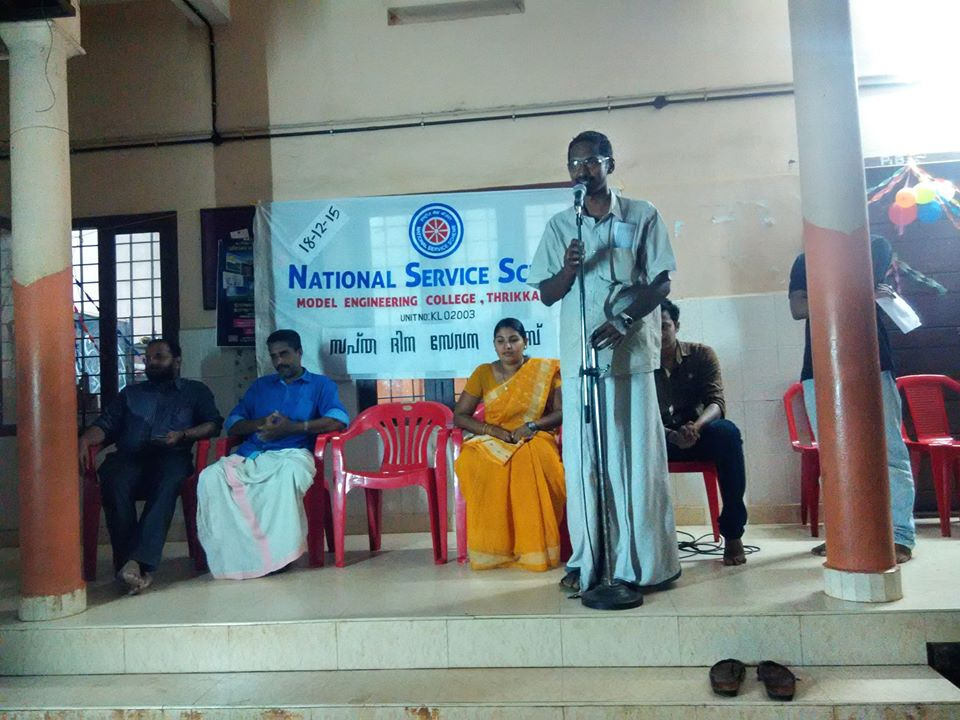
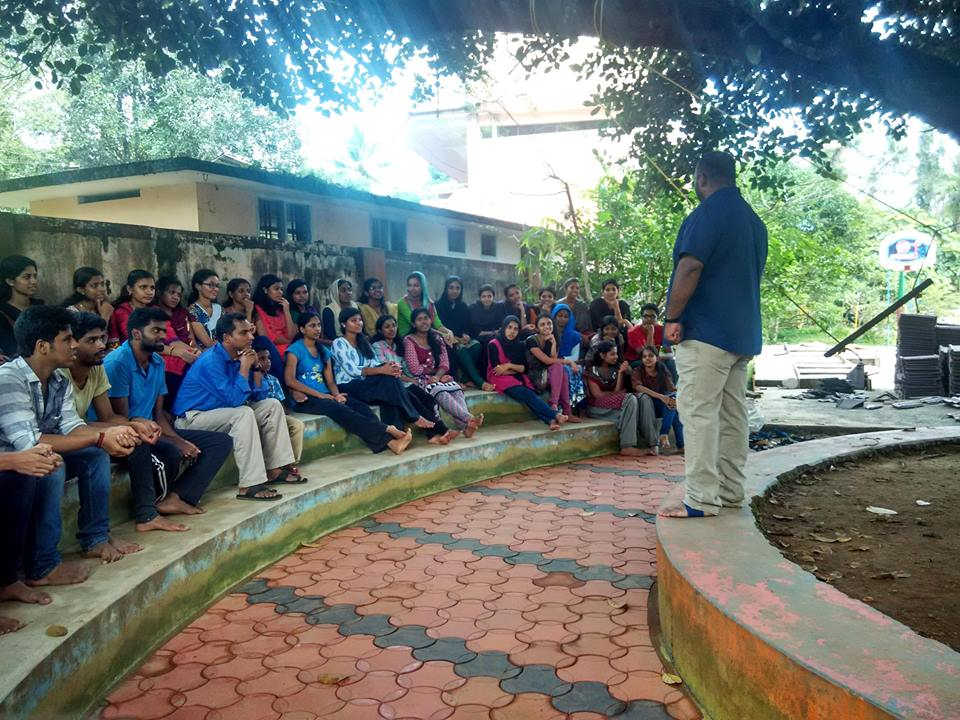
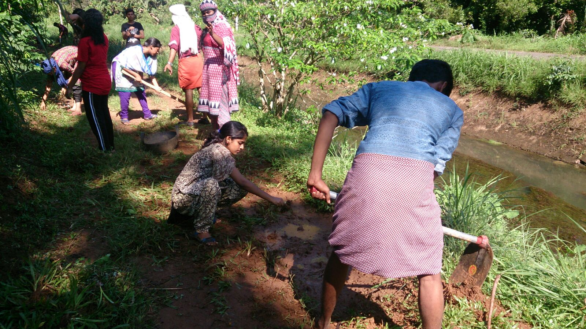
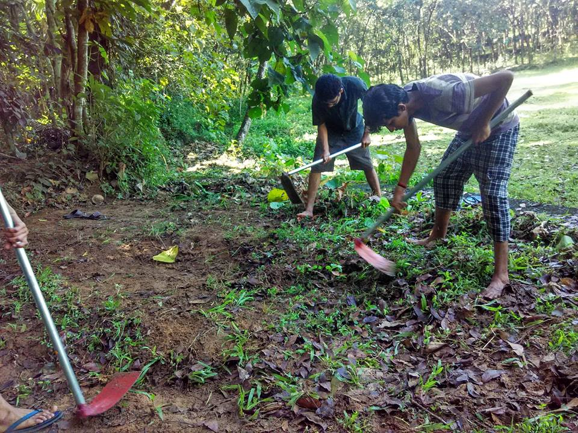
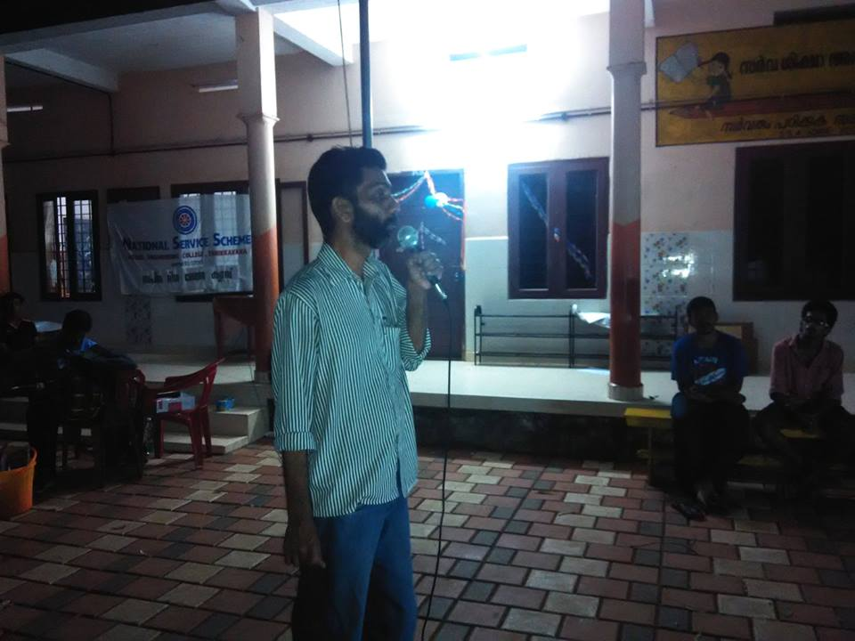
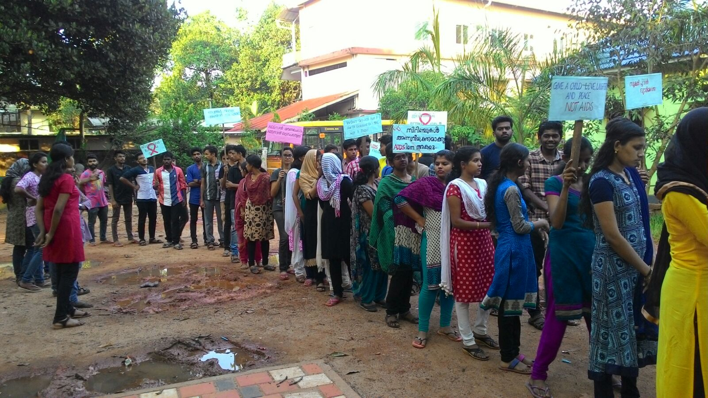
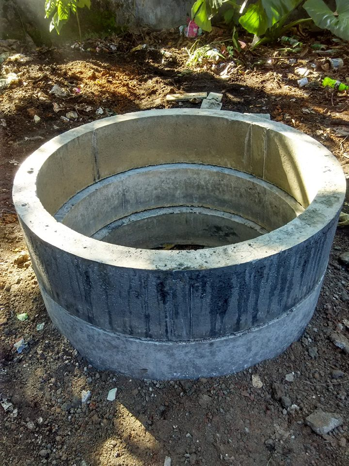
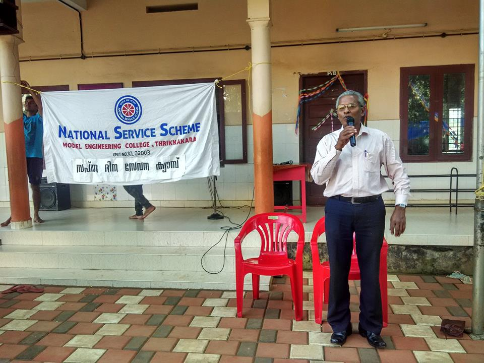
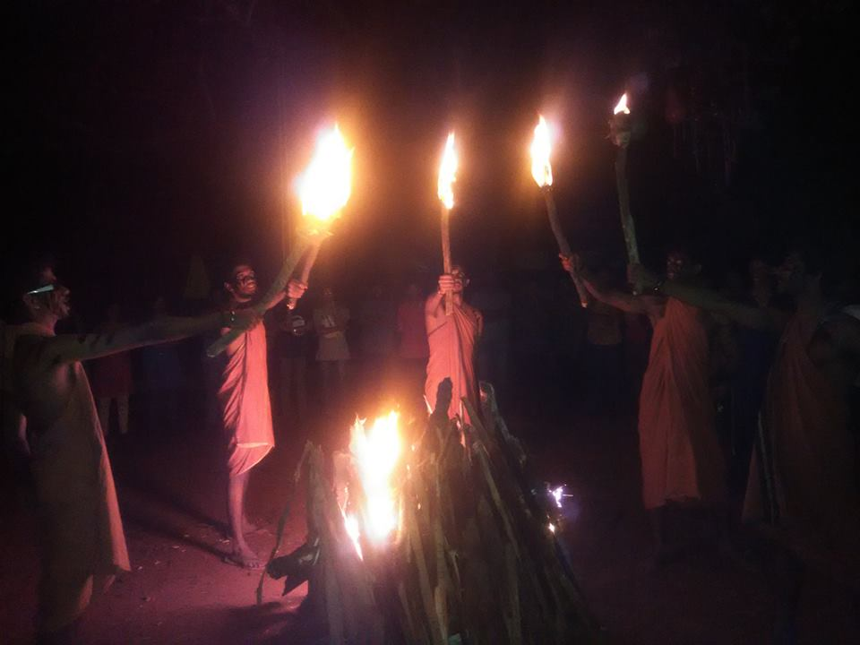

Report of Special Camp 2015 Conducted By NSS Unit of Model Engineering College,Thrikkakara National Service Scheme ( NSS) has always a special appeal to the youth as it provides unique opportunities to the students for group living, collective experience ,sharing and constant interaction with community. To achieve this, a special camp is organized every year where the NSS volunteers devote about 80 hours in Regular Activities for the development a participating village.The seven day special camp of the NSS unit of Model Engineering College,Thrikkakara was conducted at Govt.L.P School,Valayanchirangara , from 18th December to 24th December.
The inaugural function began with the NSS song at 6:30 p.m.The chairperson of NSS unit Master Sujith Kumar welcomed the gathering.The camp was inaugurated by the Panchayat President of Vengola,Mrs Dhanya Liju.The function was presided by PTA president Mr.Ashokan,ward member,Mr Ajayakumar and Nss programme Co-ordinator of MEC,Mr Jaimon Jacob.The flag was hoisted and NSS song was sung.
This was followed by the ice breaking session conducted by the fourth year NSS volunteers.The session helped the student to know each other and buy into the purpose of upcoming events.At the end of the session the students were divided into seven groups.Each group had to perform the different tasks together and had to take up cooking alternatively. The day came to an end with the serving of dinner prepared by students and teachers and day officers were selected following day.
The second day of the seven day camp began with the yoga session by Mr Suresh who is yoga trainer at Nagarjuna.He taught various types of meditation, eye and neck exercises and sooryanamskaram.The session was a perfect start for a great day.
The volunteers were left fresh and energetic.After the morning tea and breakfast the volunteers assembled for the assembly. Thought for the day was conveyed by the day officers and work was divided among the groups.The first activity was to clean the premises of Govt L.PSchool,Valayanchirangara.Different groups were alloted different areas for cleaning.Programme Officer of CUSAT,Mr Santhosh visited the camp on the same day.
The day’s lunch was prepared and served by group one.After the lunch a class was taken on mobile films by Mr.Abhilash.It opened a new world to the NSS volunteers in the field of short films.
After this session tea was served.In the evening, different groups were given different phrases and were asked to perform a skit on it. The vivid thinking skills and creativity of the students were portrayed through this. After dinner, groups were assigned to prepare camp papers and the best camp paper for the day was chosen and the camp officers for the following day was selected.
The third day of NSS seven day camp started off at 6:00 am with physical exercise guided by Nithin and Muslih. The morning breakfast was served at 8:45 am followed by the morning assembly. Group were entrusted the duty of surveying the village,cooking and road work.The day’s work involved cleaning of Tankcity Canal road. Meanwhile group 3 remained at the camp site to assist in the kitchen.
The campers left for the worksite at 9:30 am. The campers at the worksite were hearty welcomed by the local villagers and offered food and refreshments at the nearby houses. The work was duly completed and they returned to the campsite to join the survey team for lunch at 3:45 pm. Following this the campers were divided into two groups. One group indulged in making placards for the HIV/AIDS awareness rally to be held on 22nd December 2015.The other group dedicated this time to paint the roof tiles which had to be used to pave the roofs of the new kitchen being constructed at the school. In between this tea was served at 5:30 pm. At 6:30 pm Noushad Sir joined the camp with sweets for the camp volunteers. At 6:30 pm the of Mrs.Savitha, a former NSS volunteer and enthusiast visited the camp , interacted with the volunteers and talked about the opportunities they had and how to use that.
By 7:00 pm the volunteers gathered infront of the school and had a light time mingling with the ex-MECians. At 7:30 pm a debate was organized for the volunteers which enlightened the audience. Different socially relevant topics such as generation gap, online marketing, campuspolitics and reservation for women were debated upon.Dinner was served and camp paper was prepared by different groups.Camp officers for the next day were choosen.
The 4th day of NSS camp started with a one hour yoga session by Sri Suresh sir from 6:00 am to 7:00 am. He taught various asanas involving forward,backward,sideways bending and twisting. The session ended with “shavasana” which was peaceful. Tea and Breakfast was served , soon after which assembly was conducted. The day officers read out the newspaper and delivered the thought for the day.
9:00 am,all the NSS volunteers reported for their respective works. 4 groups were formed for survey,field work,cooking ,Roof cleaning and painting. The work ended at 2pm. The volunteers who went for survey and field work were given extra refreshments by the villagers. The NSS volunteers were served with lunch at 2.15pm. After fresh up the students were engaged in gaming sessions.. By 6pm gaming session ended and we had a small tea break. At 6.30pm, there was a session on nadanpattu by Santhosh sir. During this session Volunteers enjoyed themselves by engaging in nadanpattu singing and dancing.Dinner was served and volunteers were asked to prepare camp paper.
The fifth day of NSS seven day camp conducted by MEC was well scheduled and well executed. From the beginning to the end of the day the volunteers were fully energetic and enthusiastic.
The day started off with self defense class Thufail Shoukath, third year NSS volunteer, at 5:30 am. The class was an aiding hand for all volunteers especially for girls. The session lasted for an hour. This was followed by half an hour gaming session which made the volunteers mentally and physically sound for the day.
Afterwards all the NSS volunteers assembled at 7:30 am and were assigned their respective duties for the day. A group of ten was assigned to clean and paint the roof tiles and a group of five was assigned for cooking while the rest of the volunteers were given the duty at worksite. After refreshment volunteers move for their respective works. All the assigned works were completed on time and volunteers came back for refreshments at 2:00 pm.
A quiz competition was conducted by NSS volunteer Bimal in which the high school students from Vengola Panchayat participated.
An AIDS awareness rally was organized by the NSS team. It started at 5:00 pm with placards and banners made by the volunteers. The rally covered almost two kilometers and concluded at the Panchayat library, in which the library president, secretary, the school PTA president and many other local leaders made us feel their presence. The program lasted for one and half hour.
College Principal Dr.V.P.Devassia visited the camp at 6:45 pm and shared his Christmas memories and some valuable advices.
The main cultural activity for the day was a paper dress making competition where volunteers would chose a model from each team to present their work.It was extremely interesting to watch them all sneak out of their comfort zone with confidence never seen before. After declaring the winner, it was time for dinner. This was followed by the usual day valuation and paper presentation. By 10:30pm, lights were turned off.
Sixth day of the largest service minded organization,”National Service Scheme” started with the epoch yoga classes by yoga expert Sri.Suresh.Yoga classes started at around 6 am. Yoga is a the part of the rich heritage of the world’s largest democracy-India and helps in the unification of mind and body. After the morning tea and breakfast, the NSS volunteers assembled at around 8:00 am.The NSS song was sung by group 6 and news was read by Master Adhil.All the NSS volunteers “Swept the School clean” and continued the cleaning activities till 1:00 pm.A pit for disposing waste and burning it was set up at the school by the volunteers.
Breakfast and lunch were excellent and gave strength and endurance for the volunteers to continue cleaning of premises of L.P school. The villagers even prepared the traditional “Thiruvathira Puzhukku” for the volunteers. The interactive session on personality development was taken by Sri.George.The classes were very philosophical and immersed the students in a depth of realization of life.
The volunteers add moments of enjoyment at the next game session headed by Master.Thufail.The volunteers actively participated in the decoration for Christmas celebration. Sri.Udayan,ward member of Valayanchirangara,the P.T.A. president, the school Head Mistress,Mrs.Raji and former ward member Ajitha and many other special guests joined in the camp’s christmas celebrations.The NSS volunteers had a “gala-gala” camp fire which lasted till 11:30 pm. The camp fire was splendid. Thus, sixth day of the seven day NSS camp went spectacular and gave everlasting moments in the hearts of the NSS volunteers
It was now time the volunteers to say goodbye to their new friends as this was the last day of the camp.The flag was lowered and students shared the new and reviving experience at the NSS camp 2014. This was the time when valuable criticism on what all to be careful about next year camp organisation was discussed.The tiresome efforts of a group of students culminated in the formation of an even larger group of students with a calling mind, persevering nature and a service-oriented attitude- the so called angels of fortitude for this prestigious campaign. Volunteers were willing to put in their best and give it back to the community- their service, talents, knowledge and even funds. They spent 7 fruitful days imputing this idea together, formulating a formal agenda with a firm modus operandi. All in all, it was truly a remarkable experience for everyone who attended the NSS camp 2015.